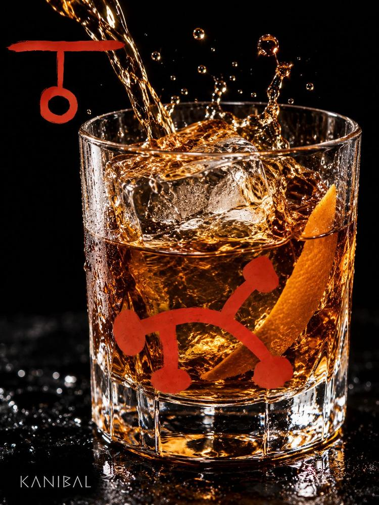
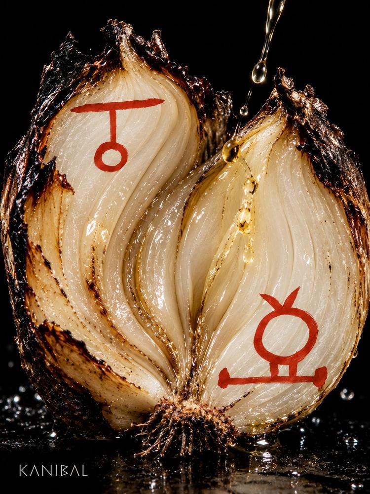
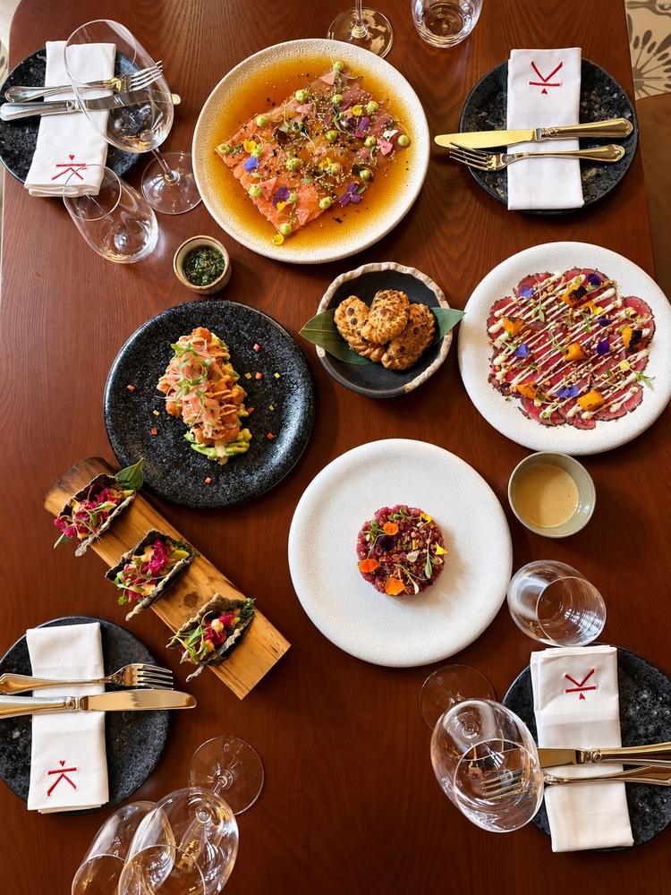

Fuego · InstintoFire · Instinct
Apetito sin disculpas.Appetite without apology.
Carne al fuego, vegetales a la brasa y un trago que se sirve sin preguntar. Cada plato lleva su marca: los glifos rojos son el alfabeto de la casa.
Meat over fire, vegetables off the coals and a drink poured without asking. Every dish carries its mark: the red glyphs are the house alphabet.






Feast for the senses
Los otros mundos de la casaThe other worlds in the house